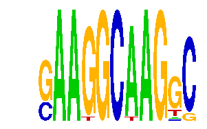

family_6 |
|---|
|  |
| Download PWM |
| Download instances (motifs) |
| Show motif distribution |
Query_ID | Query_Consensus | Subject_Name | Source_DB | Subject_ID | Length | Orientation | Offset | Divergence | Overlap | Subject_Consensus |
|---|
Sequence | Start_position (from start) | Start_position (from end) | Average conservation | Best conservation score | Instance_with_best_CS | Best_Z-score | Instance_with_best_ZS | Strand |
|---|---|---|---|---|---|---|---|---|
| chr8:42077200-42078301 | 617 | 628 | 0 | 0 | SAAGGCAAGSC | 15.956948 | SAAGGCAAGKC | 1 |
| chr8:64252000-64253540 | 471 | 482 | 0.0929091 | 0.314 | SAAGGCAAGGS | 14.438022 | SAAGGCWAGGC | -1 |
| chr4:147342800-147344800 | 997 | 1008 | 0.000272727 | 0.001 | SAAGGCAAGSC | 12.745775 | SAAGGCAAGSC | 1 |
| chr13:29373400-29374600 | 186 | 197 | 0.944091 | 1 | SAAGGCAAGGS | 12.722097 | SAAGGCAAGGS | 1 |
| chr14:55626500-55627900 | 606 | 617 | 0.00563636 | 0.058 | SAAGGCAAGKC | 12.745775 | SAAGGCAAGSC | 1 |
| chr8:34902160-34904200 | 1876 | 1887 | 0.00145455 | 0.003 | SAAGGCWAGGC | 12.745775 | SAAGGCAAGRC | 1 |
| chr3:54077800-54079400 | 590 | 601 | 0.000454545 | 0.002 | SAAGGCAAGKC | 12.745775 | SAAGGCAAGSC | 1 |
| chr2:163216200-163219500 | 2779 | 2790 | 0.00109091 | 0.009 | SAAGGCWAGGC | 14.438022 | SAAKGCAAGGC | 1 |
| chr5:100800387-100801387 | 473 | 484 | 0.0175455 | 0.025 | SAAGGCAAGRC | 12.745775 | SAAGGCAAGRC | 1 |
| chr18:11064600-11065743 | 554 | 565 | 0.00290909 | 0.005 | SAAGGCAAGKC | 12.745775 | SAAGGCAAGSC | 1 |
| chr13:29373400-29374600 | 258 | 269 | 0.580909 | 0.984 | SAAKGCAAGGC | 14.438022 | SAAKGCAAGGC | 1 |
| chr1:73763800-73765600 | 853 | 864 | 0.000363636 | 0.001 | SAAGGCAAGGS | 12.722097 | SAAGGCAAGGS | 1 |
| chr15:89245000-89247100 | 1332 | 1343 | 0.140545 | 0.159 | SAAGGCAAGKC | 15.956948 | SAAGGCAAGKC | 1 |
| chr13:46523300-46527822 | 1494 | 1505 | 0.360273 | 0.943 | SAAGGCAAGSC | 15.956948 | SAAGGCAAGKC | 1 |
| chr11:12126740-12128500 | 1283 | 1294 | 0.00845455 | 0.053 | SAAGGCAAGKC | 15.956948 | SAAGGCAAGKC | -1 |
| chr14:55583700-55589300 | 1313 | 1324 | 0.000454545 | 0.002 | SAAGGCWAGGC | 12.722097 | SAAGGCAAGGS | 1 |
| chr17:81891400-81892420 | 756 | 767 | 0.0333636 | 0.276 | SAAGGCAAGKC | 15.956948 | SAAGGCAAGKC | 1 |
| chr10:76637699-76638699 | 277 | 288 | NA | NA | SAAGGCWAGGC | 14.438022 | SAAGGCWAGGC | 1 |
| chr6:24504000-24505317 | 479 | 490 | 0.00263636 | 0.007 | SAAGGCAAGRC | 14.438022 | SAAGGCWAGGC | -1 |